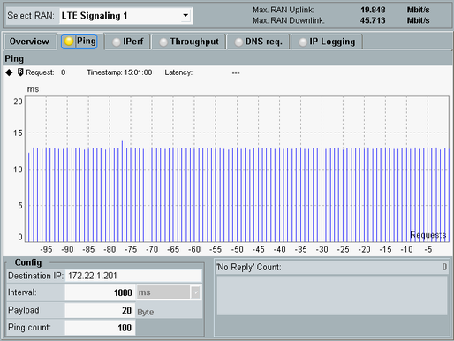

Measuring the Latency with Ping
After completed test preparation, you can ping your UE and evaluate the reported round-trip latency.
Proceed as follows:
Select the "Ping" tab.
For parameter "Destination IP", enter the IP address of the UE.
Press ON | OFF.
The measurement starts and the "Ping" softkey indicates the "RUN" state.
The graph shows the measured round-trip latency for each executed ping request.
